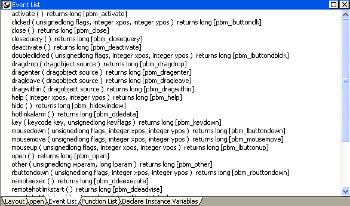

Windows, user objects, controls, menus, and Application objects each have a predefined set of events. In most cases, the predefined events are all you need, but there are times when you want to declare your own user event. You can use predefined event IDs to trigger a user event, or you can trigger it exclusively from within your application scripts.
Features that you might want to add to your application by creating user events include keystroke processing, providing multiple ways to perform a task, and communication between a user object and a window.
Suppose that you want to modify the way keystrokes are processed in your application. For example, in a DataWindow control, you want the user to be able to press the Down Arrow and Up Arrow keys to scroll among radio buttons in a DataWindow column. Normally, pressing these keys moves the focus to the next or preceding row.
To do this, you define user events corresponding to Windows events that PowerBuilder does not define.
Suppose that you want to provide several ways to accomplish a certain task within a window. For example, you want the user to be able to update the database by either clicking a button or selecting a menu item. In addition, you want to provide the option of updating the database when the user closes the window.
To do this, you define a user event to update the database.
Suppose that you have placed a custom visual user object in a window and need to communicate between the user object and the window. For information, see "Communicating between a window and a user object ".
An event ID connects events related to user actions or system activity to a system message. PowerBuilder defines (or maps) events to commonly used event IDs, and when it receives a system message, it uses the mapped event ID to trigger an event.
User-defined events do not have to be mapped to an event ID. See "Defining user events ".
The PowerBuilder naming convention for user event IDs is similar to the convention Windows uses to name messages. All PowerBuilder event IDs begin with pbm_.
Several Windows messages and notifications map to PowerBuilder event IDs.
For Windows messages that begin with wm_, the PowerBuilder event ID typically has the same name with pbm_ substituted for wm_. For messages from controls, the PowerBuilder event ID typically has the same name but begins with pbm_ and has the Windows prefix for the control added to the message name. For example:
To see a list of event IDs to which you can map a user-defined event, select Insert>Event and display the Event ID drop-down list in the Prototype window that displays.
Windows messages that are not mapped to a PowerBuilder event ID map to the pbm_other event ID. The PowerBuilder Message object is populated with information about system events that are not mapped to PowerBuilder event IDs. For more information about the Message object, see Objects and Controls or Application Techniques .
For more information about Windows messages and notifications, see the information about Windows controls and Windows management in the section on user interface design and development in the Microsoft MSDN Library .
PowerBuilder has its own events, each of which has an event ID. For example, the PowerBuilder event DragDrop has the event ID pbm_dragdrop. The event name and event ID of the predefined PowerBuilder events are protected; they cannot be modified. The event IDs for predefined events are shown in the Event List view:

The list of event IDs that displays in the Event ID drop-down list in the Prototype window includes custom event IDs. Custom user events can be mapped from Windows wm_user message numbers to pbm_customxx event IDs.
 Obsolete technique This technique is not recommended and is considered
to be obsolete. The ability to use this technique has
been retained for backward compatibility. If you do not want to
map a user event to a named pbm_ code,
use an unmapped user event as described in "Unmapped user events".
Obsolete technique This technique is not recommended and is considered
to be obsolete. The ability to use this technique has
been retained for backward compatibility. If you do not want to
map a user event to a named pbm_ code,
use an unmapped user event as described in "Unmapped user events".
These event IDs were intended for use with DataWindow controls, windows, and user objects other than standard visual user objects, which behave like the built-in controls they inherit from. They were not intended for use with standard controls.
Defining custom user events for standard controls can cause unexpected behavior because all standard controls respond to standard events in the range 0 to 1023. Most controls also define their own range of custom events beyond 1023, corresponding to wm_user messages, and some controls have custom events that overlap with the PowerBuilder custom events. The pbm_custom01 event ID maps to wm_user+0, pbm_custom02 maps to wm_user+1, and so on, through pbm_custom75, which maps to wm_user+74.